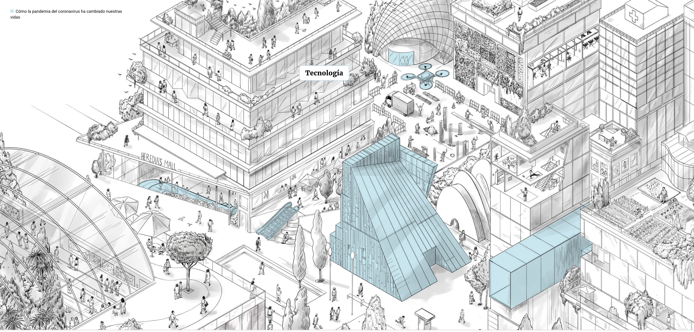
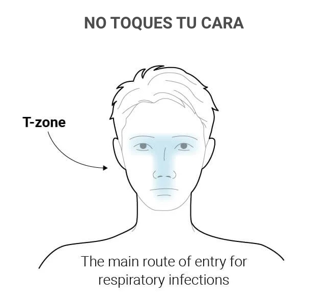
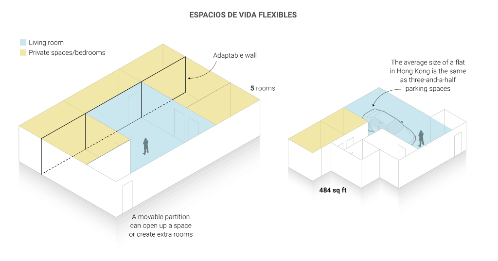
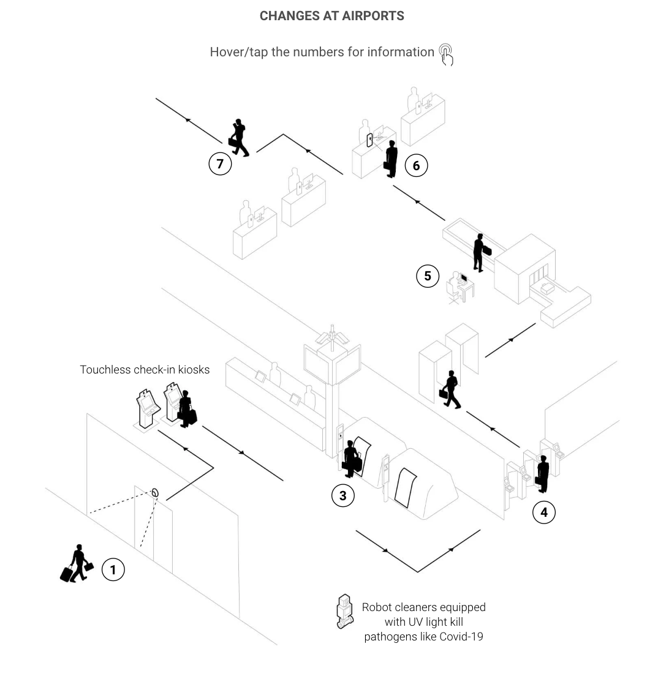

INFOGRAFÍA IMPRESA
En esta infografía se distinguen un gráfico gigante y grupos de gráficos pequeños relacionados al grande. En el primero se analizan diferentes edificios dibujados con pequeños textos que describen lo que ocurre.
El gráfico gigante es uno figurativo en el que se muestra un barrio urbano con diferentes zonas y edificios siendo dibujados en escala de grises. En amarillo se resaltan cambios que se han hecho y sus beneficios; uno de ellos remarca los dibujos de balcones que su descripción afirma “perimitir que las personas conecten con el ambiente”.
El grupo de gráficos pequeños describe cambios que se han hecho en diferentes espacios debido al covid, siendo estos gráficos figurativos. Por ejemplo, el primero hace referencia al aeropuerto que ha implementado las medidas de filas virtuales para evitar aglomeración, limpiadores robots que matan patógenos, check-in sin contacto y más.
INFOGRAFÍA DIGITAL
El gráfico grande de la versión impresa está desplegado por partes en la versión digital, donde aparece cada espacio mientras uno se desplaza.
Aparece el primer gráfico pequeño,como una única gráfica con información que no es tratada en la versión impresa, donde se habla de la cara como la principal puerta de entrada de las infecciones como el coronavirus.
En el primer gráfico de espacios se habla de los cambios que se pueden dar en la casa, siendo en el impreso el último punto a tratar, mostrando la utilización de interiores adaptables que pueden cumplir múltiples funciones en la casa.
El gráfico pequeño de aeropuerto se replantea, y se muestra como una ilustración con información interactiva al pasar el cursor, donde se organiza y enumera según el recorrido que uno hace en el aeropuerto.
¿Cómo podrían justificarse todas las modificaciones? ¿Se trata de una simple adaptación de datos de un sustrato a otro? Convendría pensar en una reestructuración completa del trabajo infográfico, que se hace atiendiendo a los usos y costumbres asociadas a cada medio?